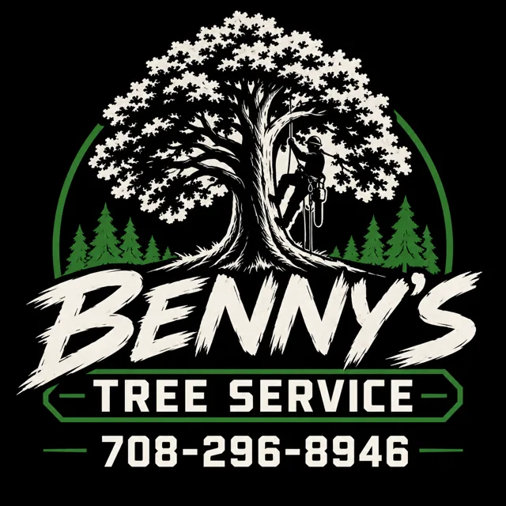
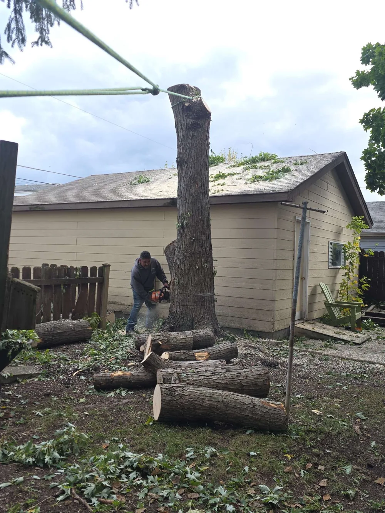
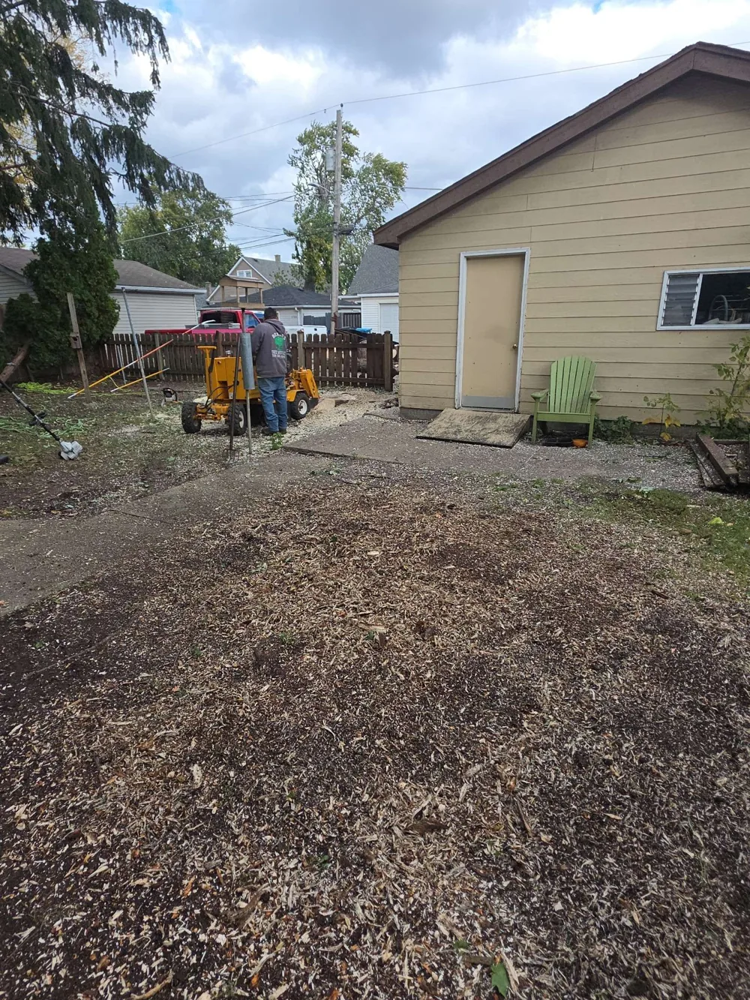

Tree removal & cutting
When a tree needs to come down, there’s a lot to consider. Tell us about the tree, what’s nearby, and what you have in mind. We’ll discuss the removal and the next steps.
Discuss a tree removalWESTERN SPRING & SURROUNDING AREAS
Tree removal, trimming, and stump removal in Western Spring and surrounding areas.
A father-and-son team. A straightforward conversation. Let’s take care of your next tree project.

TREE CARE CLOSE TO HOME
Tree removal, trimming, and stump removal.
Serving Western Spring and surrounding areas.
When a tree needs to come down, there’s a lot to consider. Tell us about the tree, what’s nearby, and what you have in mind. We’ll discuss the removal and the next steps.
Discuss a tree removalA little attention can make a big difference. If branches are overgrown or your trees need a trim, we’ll talk through what you’d like done and help you plan the work.
Talk about trimmingA leftover stump can get in the way of mowing, planting, or enjoying your yard. Whether the tree came down recently or years ago, get in touch to discuss removing the stump.
Ask about a stumpON THE JOB
Two stages of a recent tree removal beside a garage. Real work by Benny’s Tree Service.
Got a tree like this? Send us a picture and we’ll talk it through.
Text us a photo

ABOUT BENNY’S
We’re a father-and-son tree service serving Western Spring and surrounding areas.
For us, tree work starts with listening. Maybe a tree needs to go, the branches have gotten away from you, or there’s a stump you’re tired of mowing around. Tell us what you need, and we’ll talk it through.
We’re a small, family-operated business serving our neighbors in Western Spring and surrounding areas. Straightforward communication and care for every job are at the heart of how we work.
Let’s talk about your yardA FEW GOOD REASONS
A local father-and-son operation serving Western Spring and surrounding areas. Tree care with a personal approach.
It matters who you bring onto your property. Benny’s is a licensed and insured tree service.
Call or text to explain what you need, ask questions, and discuss the next steps with us.
Every yard and tree is different. Tell us about your project and request an estimate at no charge.
A good job starts with a conversation.
Let’s talk: (708) 296-8946CUSTOMER EXPERIENCES
Reviews on Google
Read what customers share on Google. If we’ve worked on your trees, we’d appreciate hearing about your experience.
Call or text (708) 296-8946. Tell us what work you need and where you’re located. Pictures are helpful, too. We’ll discuss your project and the next steps for an estimate.
We serve Western Spring and surrounding areas. Share your location when you get in touch so we can discuss your job.
Yes, stump removal is one of our services. Send a picture and your general location, or give us a call to talk about the stump.
LET’S GET STARTED
Call or text Benny’s to tell us what you need.
We’ll discuss the next steps and your free estimate.